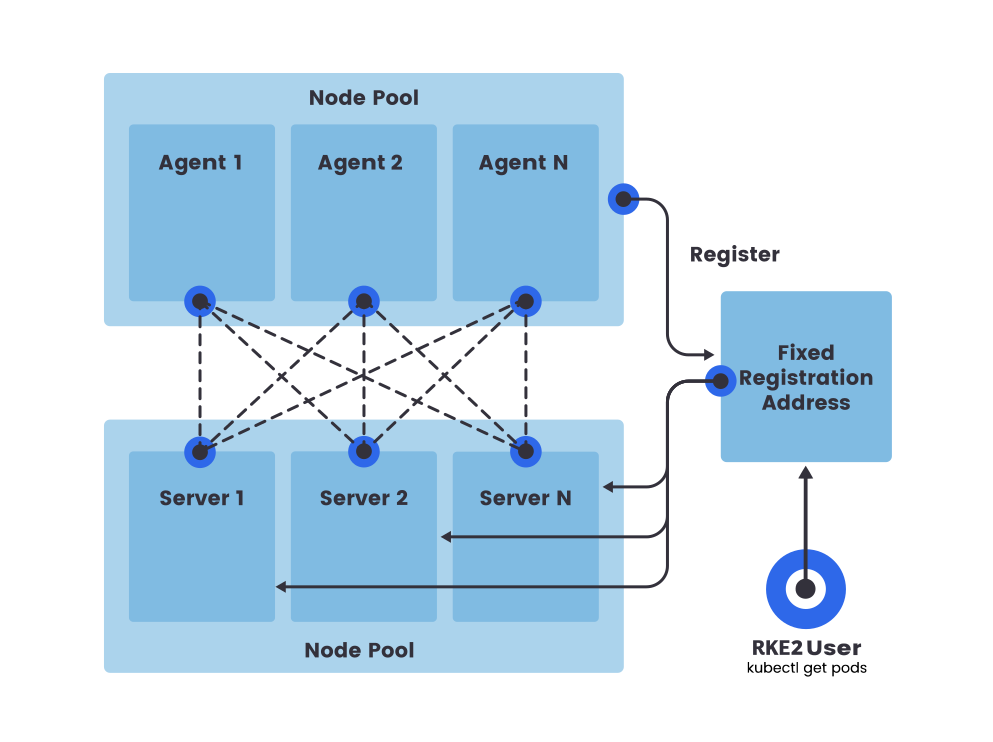

高可用性
本节描述如何安装高可用性（HA）RKE2集群。HA RKE2集群由以下组成：
-
一个放置在服务器节点前面的 固定注册地址，以允许其他节点与集群注册。
-
奇数个（推荐三个） 服务器节点，将运行etcd、Kubernetes API和其他控制平面服务。
-
零个或多个 代理节点，这些节点被指定用于运行您的APP和服务。
为什么要使用奇数个服务器节点？
etcd集群必须由奇数个服务器节点组成，以便etcd维持法定人数。对于一个有n个服务器的集群，法定人数为(n/2)+1。对于任何奇数大小的集群，添加一个节点将始终增加法定人数所需的节点数。尽管向奇数大小的集群添加节点似乎更好，因为有更多的机器，但容错能力较差。确切相同数量的节点可以在不失去法定人数的情况下失败，但现在可以失败的节点更多。

代理通过固定注册地址进行注册。然而，当RKE2启动kubelet并且必须连接到Kubernetes api-server时，它通过 rke2 agent 进程进行连接，该进程充当客户端负载均衡器。
设置 HA 集群需要以下步骤：
-
配置固定注册地址
-
启动第一个服务器节点
-
加入额外的服务器节点
-
加入代理节点
1.配置固定注册地址
除了第一个服务器节点之外，所有后续服务器节点和代理节点都需要一个URL进行注册。这可以是任何服务器节点的IP或主机名，但在许多情况下，随着节点的创建和销毁，这些可能会随时间变化。因此，您应该在服务器节点前面有一个稳定的端点。
可以使用多种方法设置此端点，例如：
-
第4层（TCP）负载均衡器
-
轮询DNS
-
虚拟或弹性 IP 地址
此端点也可用于访问Kubernetes API。因此，您可以例如修改您的 kubeconfig文件，使其指向此端点，而不是特定节点。
请注意，rke2 server 进程在端口 9345 上监听新节点的注册。Kubernetes API 正常在端口 6443 上提供服务。请相应地配置您的负载均衡器。
2.启动第一个服务器节点
第一个服务器节点建立其他服务器或代理节点在连接到集群时注册的秘密词元。
要指定您自己的预共享秘密作为词元，请在启动时设置 token 参数。
如果您未指定预共享秘密，RKE2 将生成一个并将其放置在 /var/lib/rancher/rke2/server/node-token。
为了避免使用固定注册地址时出现证书错误，您应该启动服务器并设置 tls-san 参数。此选项会将额外的主机名或 IP 作为服务器的 TLS 证书中的主题备用名称添加，如果您希望通过 IP 和主机名进行访问，可以将其指定为列表。
第一个服务器的 RKE2 配置文件示例：
|
RKE2 配置文件需要手动创建。您可以通过以特权用户身份运行 |
token: my-shared-secret
tls-san:
- my-kubernetes-domain.com
- another-kubernetes-domain.com3.启动额外的服务器节点
额外的服务器节点启动方式与第一个节点类似，但您必须指定 server 和 token 参数，以便它们能够成功连接到初始服务器节点。
|
匹配配置
在您的服务器节点上匹配关键标志非常重要。例如，如果您在第一个服务器节点上使用标志 |
额外服务器节点的 RKE2 配置文件示例：
server: https://my-kubernetes-domain.com:9345
token: my-shared-secret
tls-san:
- my-kubernetes-domain.com
- another-kubernetes-domain.com如前所述，您必须总共有奇数个服务器节点。
如果在磁盘上找到 etcd 数据存储，无论是因为该节点已经初始化还是加入了集群，配置 server: <XXX> 将被忽略。
4.确认集群功能正常
一旦您在所有服务器节点上启动了 rke2 server 进程，请确保集群已正确启动，使用：
/var/lib/rancher/rke2/bin/kubectl get nodes \
--kubeconfig /etc/rancher/rke2/rke2.yaml您应该看到服务器节点处于就绪状态。
|
默认情况下，任何 |
5.可选：加入代理节点
由于 RKE2 服务器节点默认可调度，高可用性 RKE2 服务器集群的最小节点数为三个服务器节点和零个代理节点。要添加指定运行您的 APP 和服务的节点，请将代理节点加入到您的集群中。
在高可用性集群中加入代理节点与 在单服务器集群中加入代理节点 是相同的。您只需指定代理应注册的 URL 及其应使用的词元。
server: https://my-kubernetes-domain.com:9345
token: my-shared-secret